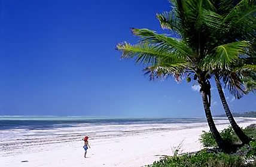

Zanzibar is encircled by the Indian Ocean, which is protected from sharks, and is an exquisite warm temperature consistently - making this spot ideal for courageous water sports!

Diving and Snorkelling will in general be a significant feature of the excursion to Zanzibar for a large number of the tourists. Indeed, Scuba Diving and Snorkeling is an astonishing encounter. Moreover, the tour of coral reefs and afterward getting a vibe of it is genuinely an amazing memory. Your tour is additionally guided with the assistance of qualified educators in the event that it is your first time adventuring the game.
Stone Town is exceptional as it represent the historical of the island and is located in the main area of the island. The tight back streets of the Stone Town are stuffed with neighborhood stores and food slows down, which are stunning to attempt while you can find the historical backdrop of the island. The Slave Trade tragically includes throughout the entire existence of this island just as a portion of the radiant mosques just as neighborhood markets. Many other numerous features incorporate are the Arab Fort, Old Customs House, and House of Wonders.
Jozani Forest is the main Natural Park on the island with another fascinating and elective action. The Red Colobus Monkeys are the important part of the recreation center and in case you're fortunate than some may be eager to play with you. Be careful with the food things you convey, as they will in general grab and scratch hands! There is a little ostensible expense for entering the recreation center yet it merits the excursion in addition to it is close by Stone Town and you may design the scholarly in like manner.
Prison Island is initially called the Changuu Island and presently famous for the hours of Slavery days when the prisoners were kept at this rent island of Zanzibar. Simply a short boat ride away from Stone Town, you at this point don't will perceive any prisoners. Notably, a Giant Tortoises who are 100 years of age and a vital fascination of the island. Additionally, shore water is located close by, take into consideration swimming to see the incredible coral reefs.
Forodhani Gardens is suitable to be tour at Sunsets when all the food stalls are ready for night markets. Significantly, it is useful for fish and neighborhood cooking styles. A few things that can be sighted are flame sea-fish, local meat things, and Zanzibari foods. Additionally attempt as parts of your excursion can the Zanzibari Pizza, made with a totally local dash of the seafood elements. However, it tastes beneficial as part of your tour experience!
Generally, there is consistently space in the things for trinkets, isn't that so? No other preferable spot that the local markets, which can give the wide scope of nearby art made products and textile items worth to be used as gift to your companions back home! It is plainly said that no trip to Zanzibar is finished if you have not visited the nearby local markets in Stone Town. Dynamic spot with nearby merchants offering a ton of things including locally made products to be sold.
Ideally, you definitely need to experience each and every thing on your Zanzibar tours and excursions. Daladalas is the local name for local drives in the neighborhood transportation. The fee would rely upon the distance, notwithstanding, the excursions would at a present cost close to TShs 2,500 (USD 1.50) - and you may hop on any Daladala made a beeline for your beach convenience or Stone Town and simply make known the heads to Driver to stop when you need him to!
Zanzibar Activities
The Snorkelling in Zanzibar is fabulous, particularly in the reef's simply off Mnemba island - where the coral reef is located. Likewise, expect numerous exotic fishes, including clown fish, to trumpet fish! Regardless of whether you are an amateur, Snorkelling doesn't take preparing like plunging does, so it is appropriate for the vast majority. The one thing I would exhort on when snorkelling however is to wear a rash vest or shirt just as sun cream, or you could wind up with some extremely harming burn from the sun!
The East Coast zone of Paje is prestigious for being an incredible objective for kite surfing and pulls in kiters from all around the globe all year. It's incredible combination of amazing breezes, waves and warm waters guarantee that this area stays a hit with the kite riding network. Regardless of whether you are a fledgling to the game, at that point, you can try out one of the island's kite riding schools which will show you the right approaches to kitesurf.
Another expansion to Zanzibar, parasailing has as of late started on the North of the island in Nungwi. It includes a parachute joined to a boat, and you are then helped through the air as the boat speeds around.
In the event that you are truly into your fishing, at that point take your risk in the waters of the Indian Ocean, where there is the occasion to hook fish, for example, marlin, fish and king fish. You can take an enormous boat out to the ocean, and furthermore hire a skipper who realizes the best places to get the sort of fish you are after.
Zanzibar has numerous phenomenal diving areas, and a wide assortment of PADI endorsed diving schools for selection. Regardless of whether you are a learner or expert diver, there is something for you to do - whether it is figuring out how to dive, or investigating the profundities and the stunning ocean life you will see down there.
Typically. Some around the similar regions as where the kite riding happens, there is likewise the alternative to partake in windsurfing - another game that depends on Paje's extraordinary combination of amazing waves and wind blend.
Sea kayaking is a very fun game, anyway consideration should be paid to tide times prior to choosing to go out into the waters on a kayak for safety consideration. It is likewise conceivable to ride on the waves which break on the reed, which can be an elating encounter.